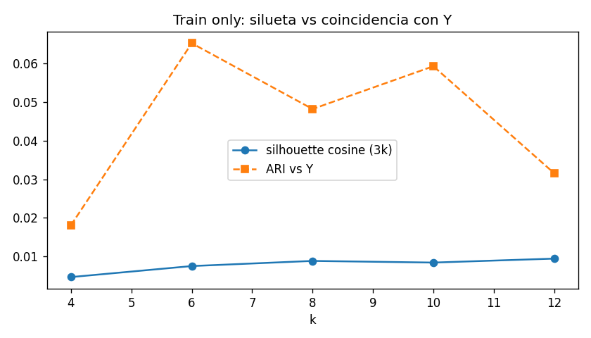
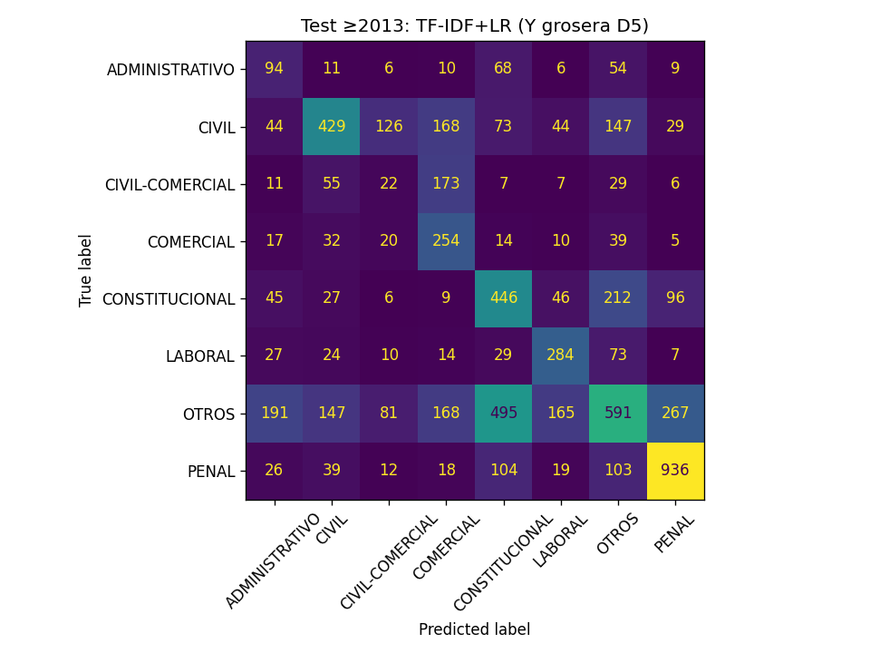

P3 — Defensa · solo D6 (clustering)
D6–D9. Empaquetar Moodle = después. Adelanto viejo de P3 no cuenta.
TF-IDF de P2. Y de D5. Test year≥2013 no se usó para elegir k ni para el fit.
1. ¿Los temas latentes son los fueros?
No supervisado no ve Y. Después podés preguntar si los grupos se parecen a una etiqueta que vos ya tenías. ARI≈0 dice: no. Eso no es que el clustering “falló el práctico”: es la respuesta empírica a “¿hay correspondencia con categorías legales?”.
P1 ya había dicho que lo frecuente (“recurso”, “ley”) es transversal. El cluster 1 es esa jerga de recurso extraordinario; el 4 es prosa genérica. LABORAL sí se marca un poco en el cluster 0 (39 % de los LABORAL caen ahí) porque el vocabulario de LCT es distintivo. PENAL se derrama. CONSTITUCIONAL se va al cluster 7 (corte/constitución) a medias.
Error típico: meter Y en el k-means para que “dé fuero”. Error 2: elegir k mirando el test. Error 3: silueta 0,01 y igual vender “8 temas nítidos”.
- Guía SAIJ Materia 5
- P1 §11 frecuente ≠ distintivo
X = vec.fit_transform(train.texto) # year<2013 lab = MiniBatchKMeans(8, random_state=42).fit_predict(X) adjusted_rand_score(train.y, lab) # ~0.05 # silueta solo en submuestra de train, no en test # top términos = argsort(cluster_centers_)

2. Supervisado (D7) — un modelo, test de verdad
El problema es multiclase desbalanceado. Accuracy 0,45 no se lidera: OTROS es la clase más frecuente en test (2105/6736). Macro-F1 trata igual a COMERCIAL (391) y a OTROS. Por eso se reportan las dos (macro y weighted) y el dummy.
Ganar al dummy prueba que hay señal en el párrafo sin usar materia/provincia como X. No prueba un fuero jurídico verdadero. La matriz va a mostrar que CIVIL-COMERCIAL se va a CIVIL y a OTROS: es el diseño de Y, no un misterio del LR.
Error típico: publicar el 0,68 de D4 como resultado de P3. Error 2: mirar test y cambiar TF-IDF→BoW. Error 3: meter provincia “para subir el F1”.
vec.fit(train.texto) # year<2013 solamente clf.fit(Xtr, train.y) pred = clf.predict(vec.transform(test.texto)) # no re-elegir hiperparámetros con pred


3. Errores a mano (D8)
A. Y peor que el modelo.
materia CIVIL-PENAL-PROCESAL → nuestra regla lo manda a OTROS; el LR dice PENAL y el párrafo es apremios ilegales. El “error” es de la receta D5, no del texto.B. Frontera CIVIL/COMERCIAL. Robo de auto/seguro → COMERCIAL; reparación integral → CIVIL. La clase CIVIL-COMERCIAL no tiene léxico propio (F1 0,07).
C. Cajón OTROS ↔ todo. PROCESAL puro es OTROS; el modelo inventa un fuero. O CONSTITUCIONAL↔PENAL por “inconstitucionalidad” en un expediente penal.
D. Texto corto / jerga transversal. Párrafos de 176 caracteres o “iure novit curia” no traen fuero: se van a CIVIL-COMERCIAL o a recurso genérico.
Un error no es “el modelo falló”. Es: ¿falló Y, falló X, o el fenómeno es mixto? Familia A es etiquetado. B es clase mal definida (P1 ya lo dijo). C es OTROS como basura. D es X pobre (encabezado disfrazado de párrafo, o plantilla procesal = cluster 1 y 4 de D6).
Por eso no se “arregla” con otro C de LR. Se arregla (si se quiere) cambiando Y o filtrando PROCESAL-only, y eso es otra receta, no un parche post-test.
Error típico: 20 errores y concluir “hay que más datos”. Acá el patrón ya estaba en P1.
err = test[test.y != test.pred] err.groupby(["y","pred"]).size().sort_values(ascending=False).head(10) # 20 filas en practicos/P3/d8_errores.json
4. Buscador (D9)
Técnica funciona: “quiebra/concurso” 0,68 → LCQ; “estupefacientes” 0,63 → tenencia; “despido por injuria” 0,44 → art. 246 LCT.
Coloquial se cae: “me echaron del trabajo” aún cae cerca de laboral (0,35) pero más flojo. “la empresa no le paga a los que le deben plata” → scores ~0,20, ruido. “lo agarraron con droga para consumo” → primero un pagaré de consumo (la palabra consumo), después sí estupefacientes.
Transversal: “recurso extraordinario por sentencia arbitraria” → plantilla de recurso (cluster 1 de D6), no un fuero.
TF-IDF+coseno recupera solapamiento de términos ponderados, no sentido. Si la query trae palabras distintivas (quiebra, estupefacientes, injuria LCT), gana. Si trae castellano de a pie (“echaron”, “plata”) o una palabra ambigua (“consumo”), el ranking miente. El README preguntaba exactamente eso: jerga vs hechos coloquiales.
No hay qrels: “relevante” acá es inspección cualitativa de 3 hits, no nDCG. El índice incluye épocas de test porque es un demo de producto sobre la muestra de trabajo; no se usó para elegir TF-IDF (eso fue D4 en train).
Error típico: llamarlo RAG o “IA jurídica”. Error 2: indexar 874k y no mirar un hit. DISCLAIMER del mentor: no dictámenes.
- Guía SAIJ Materia 5 / integrador
- P1 frecuente ≠ distintivo; D6 cluster “recurso”
X = vec.fit_transform(nlp.texto) # 50k SU cosine_similarity(vec.transform([query]), X) # hits en practicos/P3/d9_busqueda.json
Oral D6
- ¿El clustering usa Y? ¿Entonces qué mide el ARI?
- Nombrá dos clusters que sean plantilla/género, no fuero.
- ¿Por qué LABORAL se ve un poco y PENAL no?
- ¿Se usó el test ≥2013 para elegir k?
Oral D7
- ¿Por qué el 0,68 de D4 no se copia a la entrega?
- ¿Qué mide el dummy y por qué 0,41 vs 0,12 importa?
- ¿Por qué CIVIL-COMERCIAL sale 0,07?
- BoW empató en test: ¿cambiamos la representación?
Oral D8
- ¿Todo error es culpa del modelo?
- Ejemplo de familia A (Y peor que el LR) vs familia B (frontera).
- ¿Por qué no se cambia Y ahora, mirando el test?
Oral D9
- ¿El buscador es RAG?
- Una query técnica que funciona y una coloquial que se rompe. ¿Por qué?
- ¿Qué tiene que ver “consumo” en pagaré vs droga?